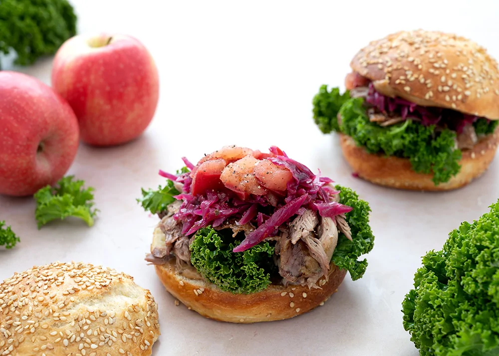

Fremgangsmåde
- Lun burgerbollerne let i ovn eller på pande.
- Rør mayonnaise sammen med lidt julesauce til en cremet dressing.
- Massér en smule dressing ind i grønkålen.
- Varm andekødet forsigtigt, så det bliver gennemvarmt uden at tørre ud.
- Smør bollerne med dressing.
- Byg burgeren med grønkål, andekød, rødkål, æble og rødløg.
- Top med overdelen og server straks.